Grapevine
Designing a giving platform that scales past manual setup
Grapevine is the first software product built specifically for giving circles. A giving circle is a group of people who pool donations and decide together which nonprofit receives the total. Fifty people give $10 each, and $500 goes where the group votes.
When I joined there was a nascent experience: a homepage, signup forms, circle pages for members, and a Grapevine rep helping circle leaders with setup. The circles themselves still ran on the tools they had been using: email, paper checks, or Venmo, and Google docs and spreadsheets.
Over five years I worked directly with the CEO and CTO, managing a designer at Everyday. I designed the experiences that replaced those tools: leaders launch and run circles on their own, members join knowing what they're joining, and donations and grants move through the platform.
Oct 2020 – Apr 2025
Led UX & product design
MVP to full platform
Designed end-to-end
90,000+
Members supported
$51 million
Total donations

I led the full design of Grapevine's platform, including a new homepage that communicated the value of community-based giving and the impact circles had created.
The giving circle leader problem
A circle leader is a volunteer, so the tools were whatever was at hand: a spreadsheet for members and their donation history, an email list for announcements, and a stack of paper checks to process. Keeping a group together was a lot of manual work.
Moving a circle onto the platform meant a call with a Grapevine rep walking the leader through setup, which got the first circles running but was unlikely to scale past them.
Outcomes
- Self-service setup replaced Grapevine rep-led onboarding
- Spreadsheets, documents, and email lists consolidated into one experience to run a giving circle
- Member donations collected through the platform, eliminating paper checks, Venmo requests, and manual tracking
- Grants distributed and tracked through the platform, replacing a manual handoff
Helping leaders get their giving circles off the ground
Onboarding was a challenging problem. Building the giving circle experience required a lot of information from the leader, and a single long form would feel like a chore. The question was how to collect all of it while letting the leader see their progress and feel the circle taking shape as they went.
I designed a mobile-first progressive onboarding flow that broke setup into three stages, each asking a little more as the leader's confidence built.
- Define the circle's purpose and donation goal.
- Preview and finalize the design of the group page and invite collaborators.
- Make the first donation and invite members.
By the time a leader launched their circle, they understood the product well enough to run it.
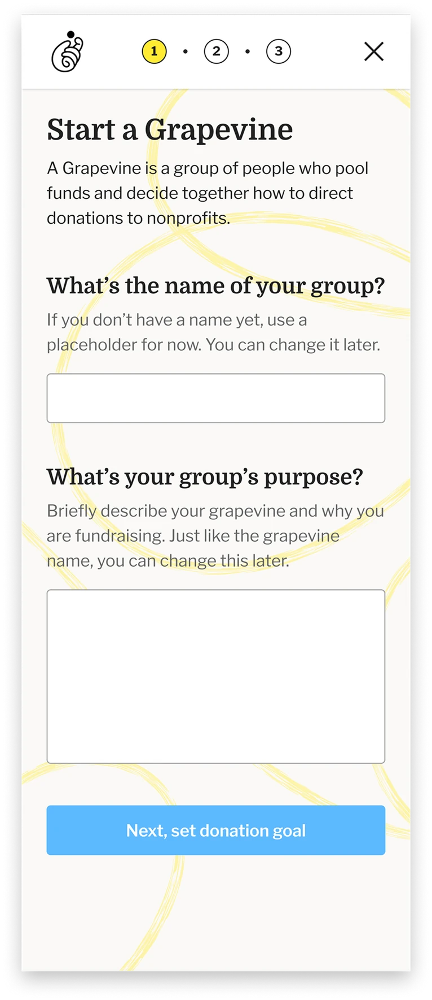
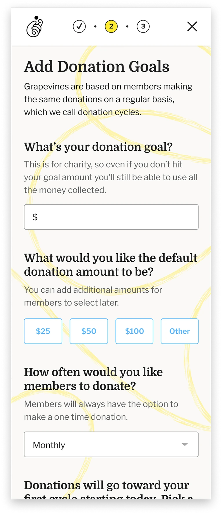
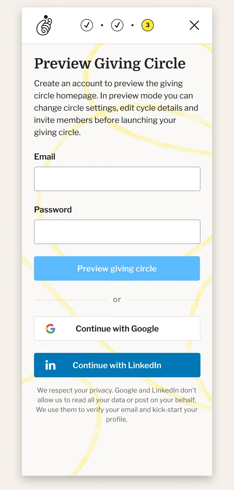
The first stage is intentionally light. A few questions frame the giving circle before a leader moves on to customizing the group page.
The second stage does the most work. Rather than a settings form, I put leaders directly into their own group homepage, editing the design in place. Seeing the circle take shape, with its name, its cause, its goal, and their photo under the Leadership heading, makes a leader want to launch it. The remaining setup steps stay pinned at the top of the page with a prominent Launch Group CTA to signal the finish line.

The second stage opens the giving circle page up for customization. Editing in place lets a leader see and feel the group before launching it, with setup steps and the launch CTA held at the top.
Launching their circle, the final stage, was designed as a moment worth celebrating: confetti rains down, an encouraging message appears, and a clear next step. The goal was to send leaders into member recruitment feeling confident, not uncertain.
The decision that shaped the flow most was holding the leader's own first donation until the final step. New members are twice as likely to donate when the leader already has, so the first dollar and the public launch became the same moment. No leader ever sat on an inactive circle they'd already funded.

The launch modal asks the leader for the first donation, noting that members are twice as likely to give when a leader already has.
Running a circle is not editing a page, designing the leader UX
The first version of the leader experience was the member view with edit and open CTAs layered on top, a WYSIWYG approach that made sense early on but couldn't scale as more giving circles joined the platform. As usage grew, it became clear that leaders needed real management tools, not just the ability to edit their group page.
The product decision was to stop treating the leader's tools as an extension of the member page and build them as their own surface. Leaders could still edit the look and feel of their member page in a WYSIWYG editor, but they now had tools designed specifically for running their circle: donation cycle management, a member CRM with messaging, discussion moderation with built-in templates, and group settings.
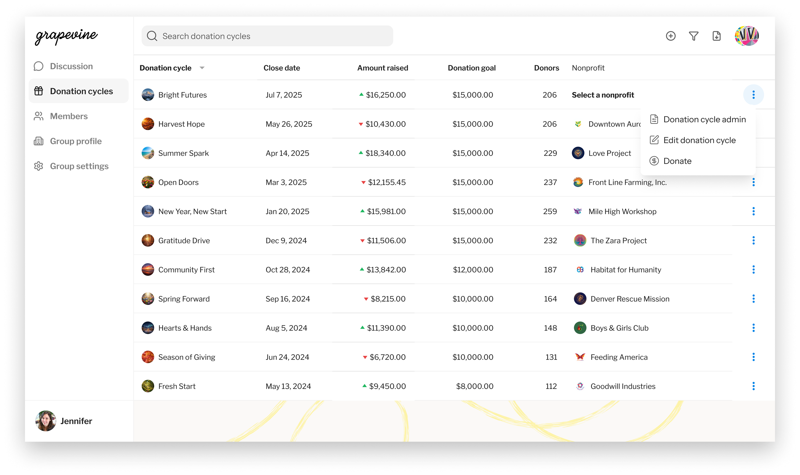
Donation cycle management tools in the leader experience.
Having a central place to manage the group's donation cycles was one of the most requested features. In the WYSIWYG UI, the leader had to open each donation cycle from the corresponding member view, a clunky experience that created friction for leaders.
In the redesigned leader UI, a dedicated donation cycles table let the leader see the cycle name, close date, amount raised against goal, donors, and the nonprofit that received the grant. Leaders could customize columns to their own information needs, for example open date, amount directed, available to be directed, and scheduled for donation. Each cycle had its own detail screen where the leader could take specific actions to manage it.
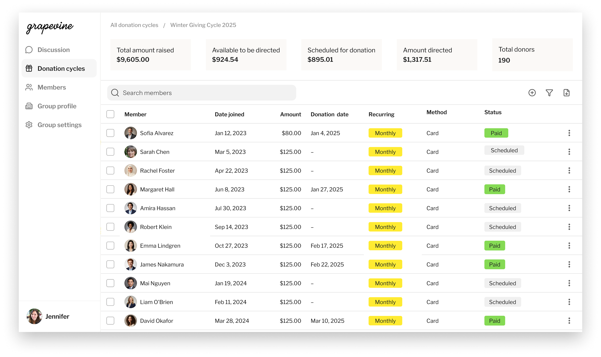
A running ledger of the cycle. Who has given, who is scheduled, and how the total breaks down across states.
The donation cycle detail is a running ledger of each member's status in the current cycle: their recurring donation amount, the date of the donation, the method the member uses, and the donation status. This let leaders easily track and reach out to members who hadn't donated in the current cycle.
Leaders also get an overview of how the cycle's donations break down, from amount raised to available for donation to amount directed. Each donation cycle is linked to the member view where nominations and voting happen. As members nominate, usually through a templated post from the leader, the leader can manage the nominations and select them for voting.
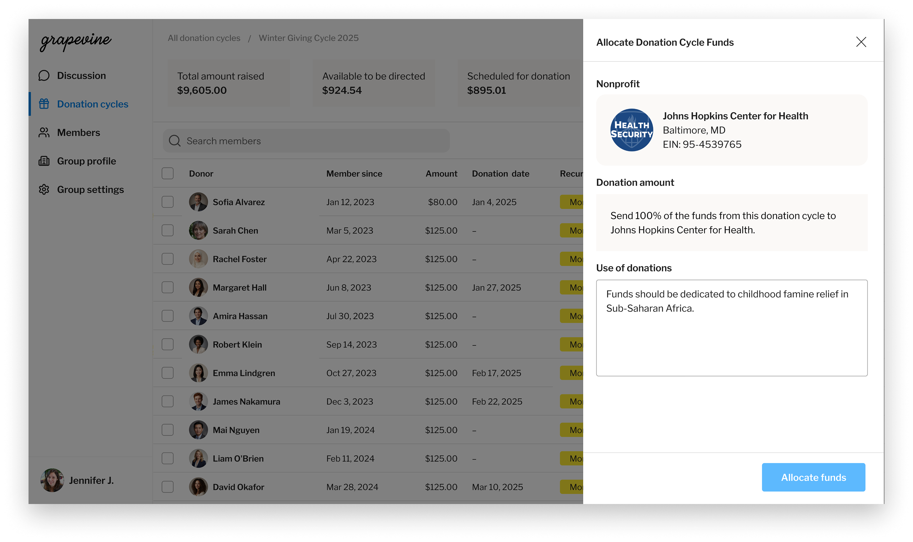
Once the vote closes, the leader sends the cycle's donations to the winning nonprofit from the same place the group decided. No check to mail, no ledger to update.
And at the end of the cycle, the leader can launch the granting flow. Grapevine handles a digital transfer to the nonprofit, so the leader no longer has to track submitted checks. Because every nonprofit has to be a registered 501(c)(3) in the database, there's no manual entry of a nonprofit and no off-platform donations. A nonprofit that isn't in the database can be qualified by contacting Grapevine directly.
What changed for giving circle leaders
Leaders starting a circle get a self-serve flow that builds their confidence as they launch. Leaders bringing an existing circle over keep the full history of their impact. From there both run on one dashboard instead of a stack of tools and documents, with donations and grants happening in the same place the group makes its decision. The Grapevine rep who got the first circles on stopped being the only way onto the platform.
The member problem
Joining meant donating to a group whose model you might not yet understand, alongside people you might not know. The early flow was sign up, then donate. That works on a member a friend personally recruited. For everyone else, the ask arrives before the trust does.
The other half of the problem was already in a circle. Those members had been giving for years through a text thread, a Venmo request, and a show of hands someone tallied. They needed no convincing about the model or the people, only a process that survived the move.
Outcomes
- Platform grew from a few thousand members to 90,000
- Self-service onboarding delivers member value before the donation step, so trust is established before the first donation
- One digital home for the giving circle, replacing text threads, email lists, and spreadsheets
- Per-cycle giving on the platform replaced monthly Venmo requests and paper checks
- Every grant triggers an automated ask to the nonprofit for a thank-you that posts back to the group highlighting impact
Understanding the model before donating
I designed member signup around the same principle as leader onboarding: do not ask for a donation before the person understands what they are joining. A prospective member can access a landing page designed to educate. They see the group's mission, the members already in it, the nonprofits it has granted to and how much, a thank-you video from a past grantee, upcoming events, and what a quarterly donation means in terms of impact.
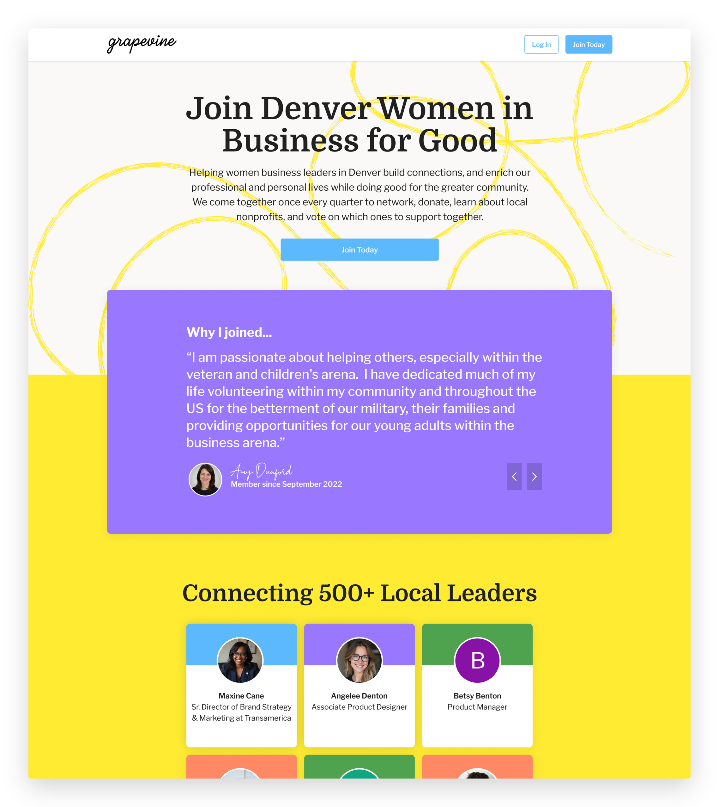
The commitment is per cycle, not one time. Naming that plainly at the moment of signup is the difference between a member who gives once and a member who stays.
Only after that does the join flow begin, and it is built to deepen the commitment. A member builds a profile, hearts the nonprofits they want to nominate later, flags the events they would show up for, and after donating, connects with the other members. The donation is per cycle rather than one time, which is the real commitment the flow is asking for, and the page has spent every section earning it first. By the time the donation is made, the member has a stake in the group, not just a donation receipt.
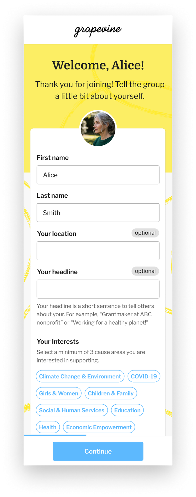
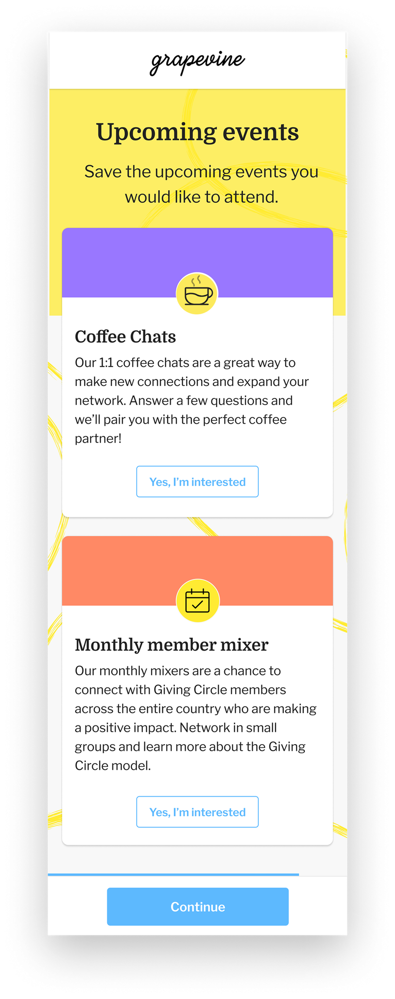
A member builds a profile and learns how a circle works before any money is asked for. The old flow was sign up, now donate, which only worked on members a friend had already convinced.
The donation cycles
The donation cycle defines the group's cadence. The group sets its length, a month or a quarter, and inside it the same sequence runs every time: members donate and nominate nonprofits, the group discusses them, the field narrows to three, the group votes, and the winner receives that cycle's donations.
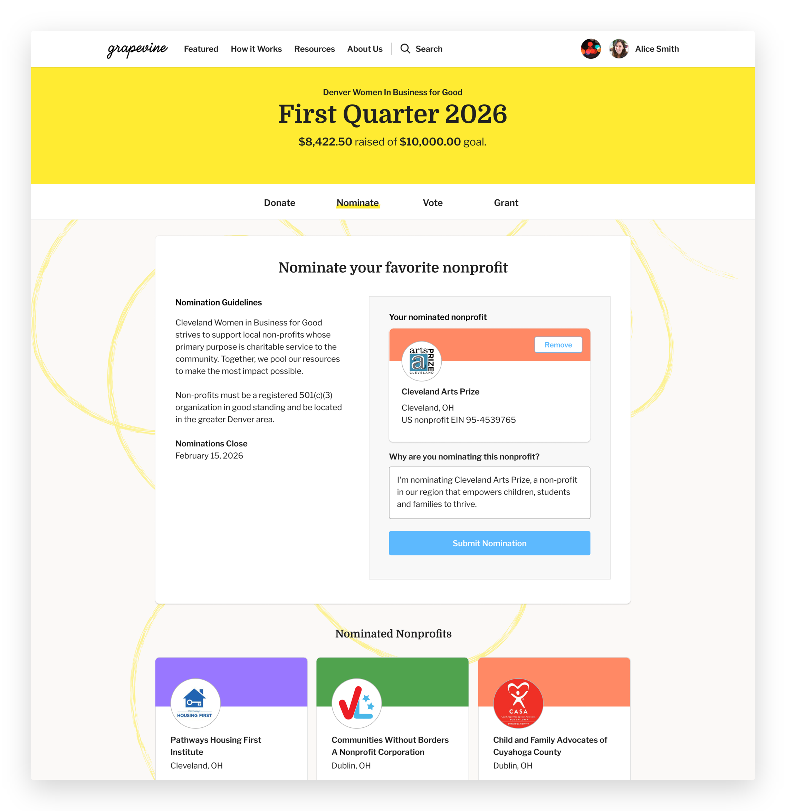
Members can nominate and tell the group why they are nominating this nonprofit.
The platform is designed around that sequence. Nomination is open to any member, with the reason attached, and there is no minimum to nominate. Members heart nonprofits as they come across them, saving them for a future cycle. The leader configures the vote when posting it to the feed: one vote per member, or select-your-top-three when the field is large. Ties trigger a runoff. When the vote closes, the winner is what the leader submits the cycle's pooled donations to.
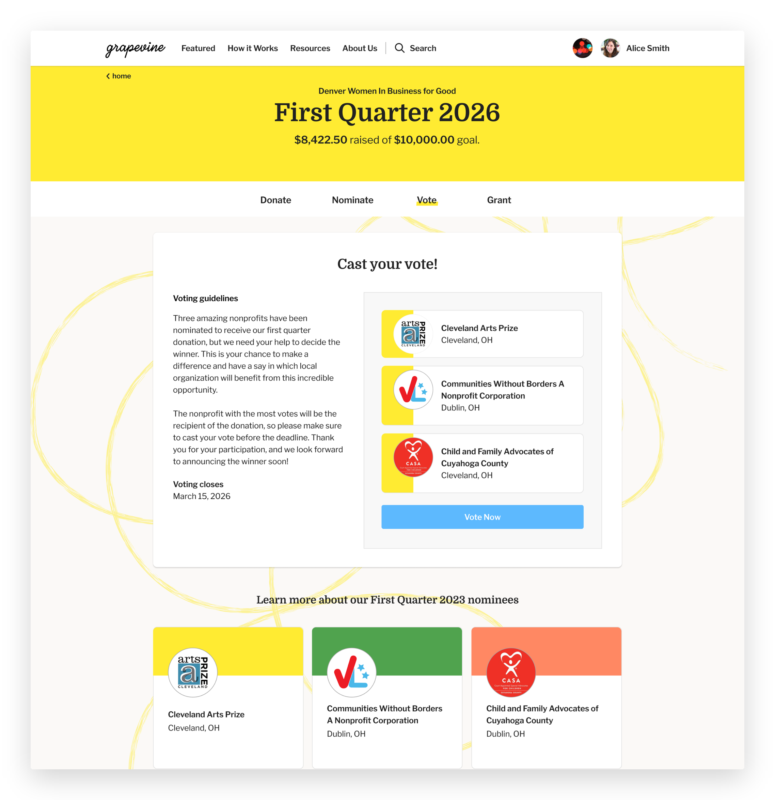
The leader sets the vote up when posting it: one vote per member, or top three when the field is large. Ties go to a runoff.
The feed carries the rest of it. Posts have types, and a meetup is one of them, with date, time, location, description, and RSVP status as required fields. Many of these circles are local and the giving is only part of what the group does together.
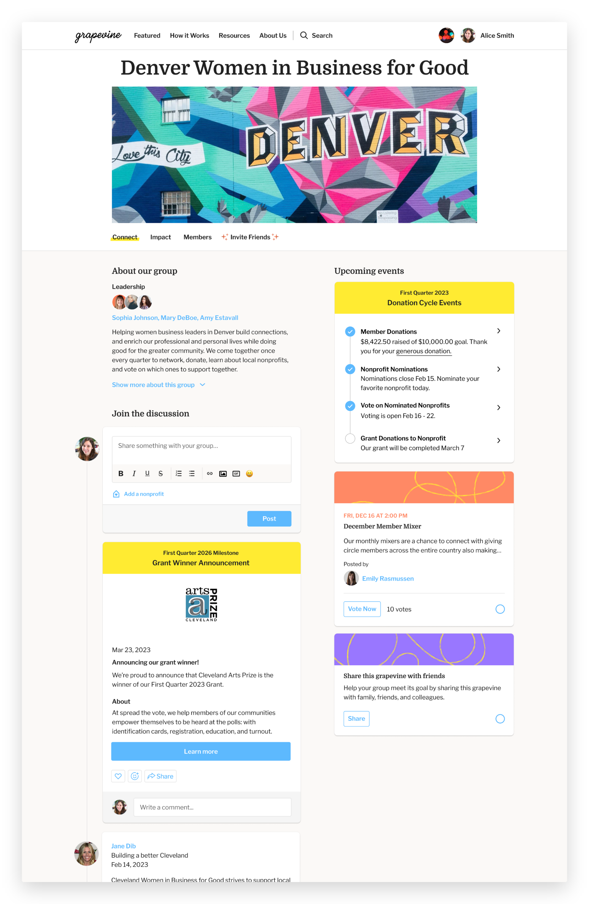
Group homepage showing feed types including pinned events, member posts and current donation cycle status.
What changed for members
A member joins understanding what a giving circle is. As part of a community, they donate, nominate the organizations they care about, vote on the three that make it to the final stage, cheer the final grant and see the result come back as a video or letter from the people who received it. The parts that used to be email chains or group text messages, a Venmo request and offline voting are now all on one platform.
The results
Over five years, Grapevine grew into a platform supporting 90,000 members and $51 million in donations. The rep-assisted setup it started on gave way to experiences leaders run themselves: they launch and manage their circles independently, and new members are brought into groups through a guided onboarding flow. What began as manual workflows a small team stitched together by hand became a platform its own users operate.
More work